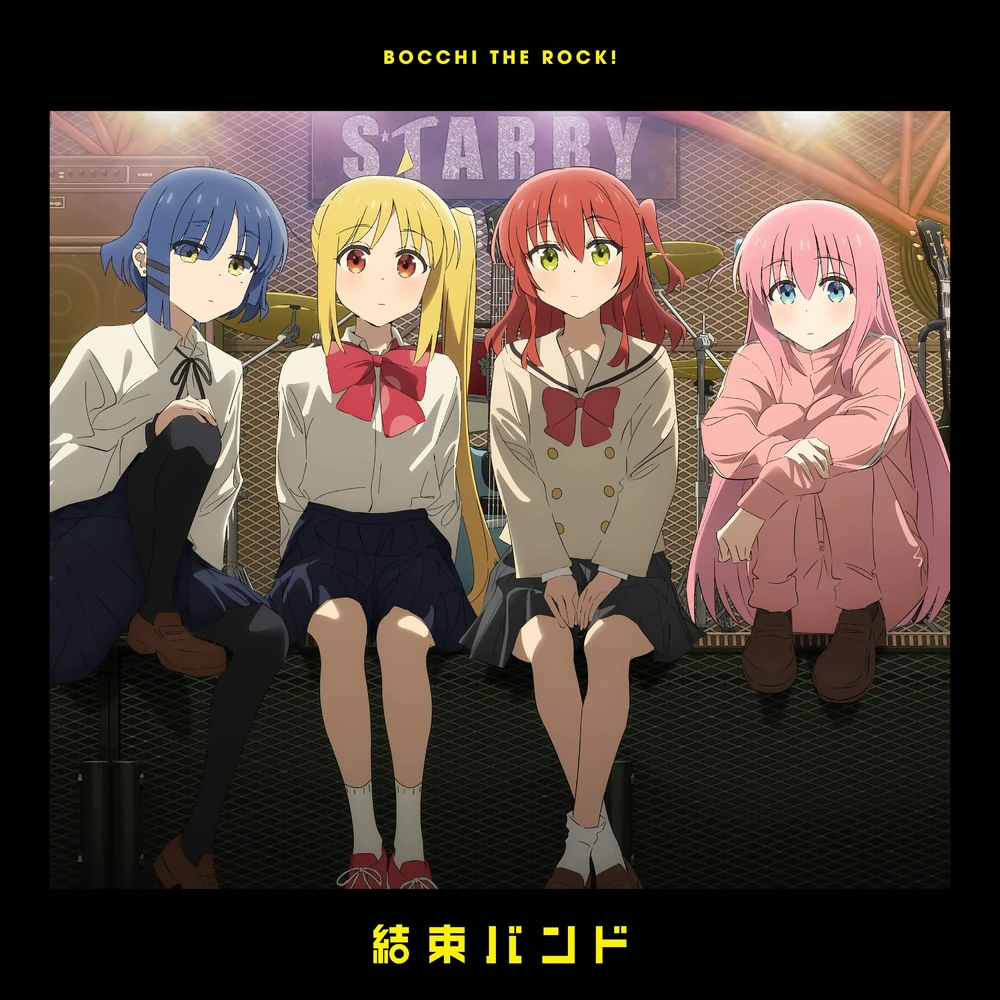

Kessoku Band Discography
Albums & Songs
A look at the music from Kessoku Band featured in Bocchi the Rock!

Kessoku Band (2022)
The debut album from the in-anime band Kessoku Band, filled with energetic and emotional tracks that capture the essence of Bocchi’s journey.
- 1. Seishun Complex
- 2, Hitoribocchi Tokyo
- 3. Distortion!!
- 4. Secret Base
- 5. Guitar, Loneliness and the Blue planet
- 6. I can't Sing a Love Song
- 7. That Band
- 8. Karakara/li>
- 9. Chisana Umi
- 10. Nani ga Warui
- 11. I won't Forget
- 12. If I could become a constellation
- 13. Flashbacker
- 14. Rolling Ropck, Morning Falls on you

Into the Light EP (2023)
A beautiful follow-up collection featuring emotional songs and instrumental versions loved by fans of the series.
- 1. Into the Light
- 2. Blue Spring and the Western Sky
- 3. Into the Light (Instrumental)
- 4. Blue Spring and the Western Sky (Instrumental)
 alt="Underground">
Shine as Bright as the Moon/Now I'm from the Underground EP. (2024)
- 1. Shine as Bright as the Moon
- 2. Now I'm from the Underground
{kind=link}